保护模式
寻址方式
选择子与描述符
保护模式下的寻址不再像实模式一样通过各个段寄存器乘上 16 再加偏移，各个段寄存器中存储的值实际上变成了一个索引，该索引指向了描述符表中的表项，我们就将段寄存器(CS, DS, ES, SS, FS, GS)的值看作一种段选择子，将对应表项称为段描述符
描述符表分为全局描述符表(GDT)，局部描述符表(LDT)和中断描述符表(IDT)，它们的基址由全局描述符表寄存器(GDTR)，局部描述符表寄存器(LDTR)与中断描述符表寄存器(IDTR)提供，其对应的表项也分为全局描述符，局部描述符，中断描述符等
一个描述符为 8 bytes，它详细定义了存储器段的起始地址，界限，访问属性等信息
段选择子(16 bits)的结构：
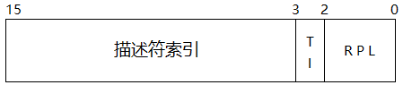
- 高 13 位为描述符在表中的索引，因此共能寻址 8k 个描述符
- TI 位为 0 表示描述符在 GDT 中，为 1 表示在 LDT 中
- RPL 有两位，可以表示从 0 ~ 3 的请求优先级，表示给出当前选择子的程序段的权限级别
描述符(8 bytes)的结构（上为高 32 位，下为低 32 位）：
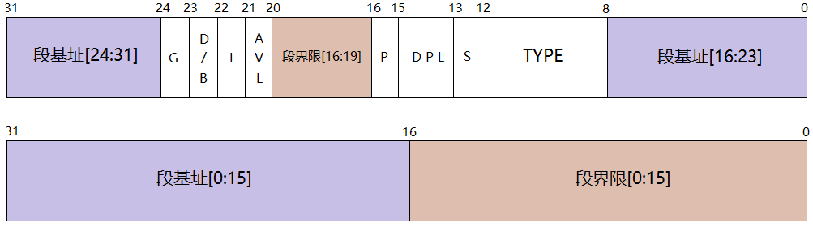
- G：段界限的粒度位
- G = 0 表示段界限以字节为单位，范围为 0B ~ 1M
- G = 1 表示以 4k 为单位，范围为 0K ~ 4G
- D/B：默认的操作数或堆栈指针大小，该位规定了指令是怎样访问寄存器与存储器数据的。
- D = 0：16位指令模式，兼容 16 位程序，指令在默认情况下使用 16 位的地址与 16 位寄存器
- D = 1：32位指令模式
- 对于堆栈段来说，该位被称为 “B” 位，规定隐式堆栈操作时，使用 SP 还是 ESP
- L：64位代码段标志
- AVL：指示该段是否有效
- AVL = 0 表示段无效（不可用）
- AVL = 1 表示段有效
- P：段存在位，用于指示描述符所描述的段是否在内存中
- P = 0：只建立了描述符，还未加载入内存，产生异常中断
- P = 1：在内存中
- DPL：描述符的特权等级，有两位，权限由 0 到 3 依次减弱
- S：指定描述符的类型
- S = 0：系统段
- S = 1：代码段或数据段
- TYPE(S = 1时)：访问权限字段
- 对于数据段，这四位分别是 X, E, W, A
- X = 0：不可执行
- X = 1：可执行
- E = 0：向高地址生长
- E = 1：向低地址生长
- W = 0：只读
- W = 1：可读可写
- A：已访问位，若该段最近被访问，则置 1
- 对于代码段，这四位分别是 X, C, R, A
- X, A 同上
- C = 0：非特权级依从段（下面有解释）
- C = 1：特权级依从段
- R = 0：不可读
- R = 1：可读
- 数据段总是不可执行的(X=0)，代码段总是可执行的(X=1)
- 对于数据段，这四位分别是 X, E, W, A
- TYPE(S = 0时)：系统描述符类型
- TYPE = 0, 8, 10, 13：保留字段
- TYPE = 1：可用的 16 位任务状态段(TSS)描述符
- TYPE = 2：LDT 的段描述符
- TYPE = 3：正忙的 16 位 TSS 描述符
- TYPE = 4：16 位调用门
- TYPE = 5：任务门
- TYPE = 6：16 位中断门
- TYPE = 7：16 位陷阱门
- TYPE = 9：可用的 32 位 TSS 描述符
- TYPE = 11：正忙的 32 位 TSS 描述符
- TYPE = 12：32 位调用门
- TYPE = 14：32 位中断门
- TYPE = 15：32 位陷阱门
特权级依从的含义（一致性代码段和非一致性代码段）：
- 非依从的代码段只能从与它特权级相同的段调用，或是通过门调用
- 依从的代码段允许从低特权级的代码段转移到该段执行
地址空间
保护模式下有三种地址空间：逻辑地址空间，线性地址空间和物理地址空间
程序给出的地址通常为逻辑地址（包含选择子和偏移），在描述符表中查询后，得到线性地址，再经分页机制处理后，得到实际物理地址
从逻辑空间到线性地址空间的映射方式如下：
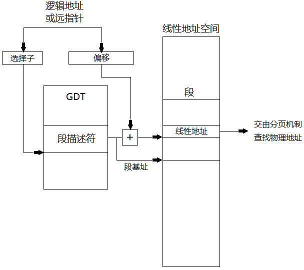
线性地址空间到物理地址空间的映射在下面会讲到
调用门，任务门，中断门与陷阱门
门在本质上是一个描述符
调用门
调用门用于在不同特权级之间进行程序控制转移，它安装在 GDT 或 LDT 中，定义了目标代码段的选择子、入口地址偏移等，结构如下：
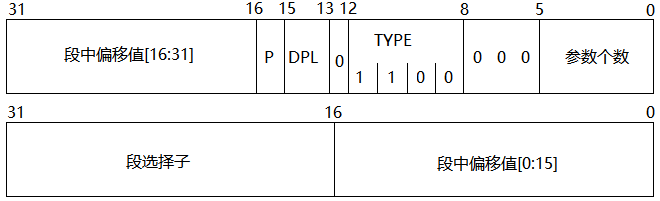
调用门访问代码段的实现过程：
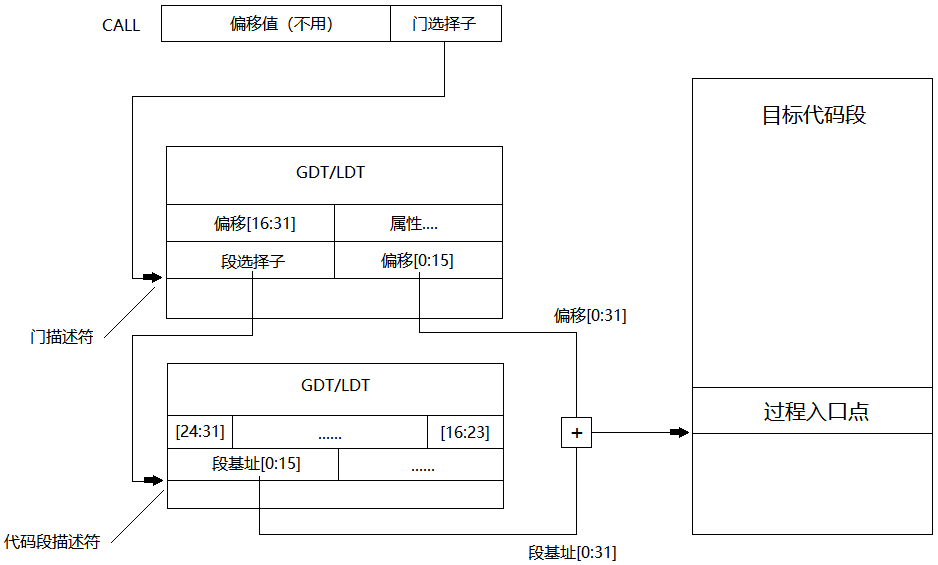
中断描述符表(IDT)
在讨论剩下三个门之前，先来看看什么是 IDT
IDT 是一个系统表，它的每一个表项对应一个中断或异常向量（描述符），表界限为 2048 bytes，也就是说最多可以存放 256 个描述符
任务门，中断门与陷阱门
这三个门都可以安装在 IDT 中，由第 40 ~ 43 位的 TYPE 字段区别
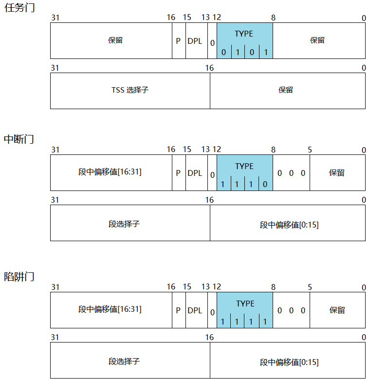
中断门与陷阱门的区别：通过中断门进入中断服务程序时，CPU 会将 IF 标记位复位，防止嵌套中断的发生，而通过陷阱门进入服务程序时则维持 IF 标志不变
程序不可见寄存器
GDTR 与 IDTR(中断描述符表寄存器)
保存描述符表的基址与界限（最大长度 64k），在使用之前，需进行初始化，结构如下：
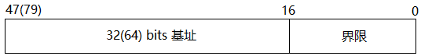
Task Register(任务寄存器) 与 LDTR
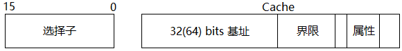
LDT 的位置是从 GDT 中选出的，当需要访问 LDT 时，将选择子装入 LDTR 中，选择子访问 GDT，把 LDT 的描述符装入 LDTR 的 Cache 中
TR 包含一个选择子，用来访问一个任务的描述符，任务通常是进程/应用程序，它们的描述符存储在 GDT 中
保护模式下，段寄存器还有程序不可见的区域——高速缓冲器(Cache)，与 CPU 中的一级、二级高速缓冲不同，当段寄存器中的数发生改变，CPU 访问描述符表，并把描述符装入 Cache 中，一直保存直到段寄存器再次发生变化，这样就能在 CPU 重复访问同一个段时，节省不必要的查询时间
分页机制（两级页表）
线性地址通过分页机制透明地转化为真实物理地址，涉及的寄存器如下：
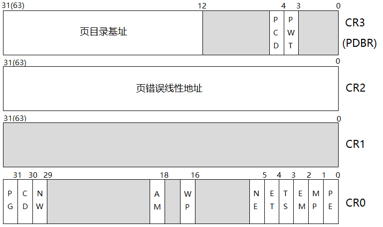
CR0 的 最高位 PG 需置为 1，表示按页管理存储空间，否则程序给出的线性地址即为物理地址
CR3 的 高 20 位为页目录基址，为页转换部件寻址存储器中以 4k(4096 bytes) 为边界的页目录表
每个页目录表包含 1024 个页目录项，每项长 4 bytes，每个页目录项又寻址一个包含 1024 项的页表，页表每项的长同样是 4 bytes，每个页表项又指向物理地址中一个连续的 4k 对齐的区域
因此，每一个页目录项代表存储器的一个 4M(1024 * 4k) 的区域，一个程序有 4G 的线性地址空间，正好需要 1k 个页目录项来存储，一个任务所需要的用于存储表的连续空间由原来的 1M(单级页表) 变成了现在的 4k，而且这些页目录项当程序需要时才会加载到页目录表中，在很大程度上节省了内存空间
页目录项(PDE)与页表项(PTE)的结构如下：
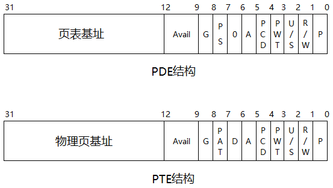
- P：存在位标志，表示当前条目所指向的页表或者页是否在内存中
- R/W：读写权限标志，为 0 表示只读，为 1 表示可读可写
- U/S：用户/超级用户标志，指定一个页或者一组页的特权级
- PWT：用于控制对单个页或者页表的 Write-back 或 Write-through 缓冲策略
- PCD：用于控制对单个页或者页表的缓冲
- A：表示页或者页表最近是否被访问
- D：表示页或者页表最近是否被写入
- PS：决定页的大小
- G：表示是否为全局页
- Avail：保留字段
程序给出的线性地址由三部分构成：
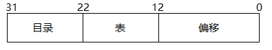
因为页目录表与页表的表项数都是 1024，所以用 10 bits 来寻址即可，如上图中的 22 ~ 31 位与 12 ~ 21 位，而低 12 位的偏移用来寻址 4k 物理页中的一个字节
寻址的流程大致如下：
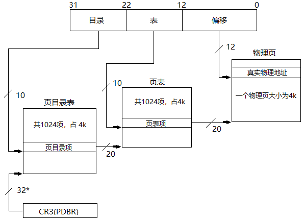
- 将线性地址的高 10 位取出作为页目录表的索引，乘 4 后与页目录寄存器(CR3)提供的页目录表基址相加找到其中的表项
- 将找到的页目录表项高 20 位（4k 对齐，低 12 位无用）作为页表的基址，与线性地址中间 10 位乘 4 后相加找到其中对应的页表项
- 找到的页表项高 20 位即为一个物理页的基址，与线性地址的低 12 位相加即可精准定位 4k 页面中的每一个字节
然而，在地址转换的过程中，由于要查页表，因此用户每访问一次存储单元，实际需要访问主存两次，这两次访问主存几乎使程序运行速度下降一半，为了解决这个问题，创造了快表(TLB高速缓冲存储器)，将经常使用的页表项通过页替换策略放置在快表中，每次访问地址时先到快表中查找，没找到再访问页目录和页表
TSS(任务状态段) 与任务切换
TSS 结构
TSS 是保存任务状态信息的系统段，其结构如下(104 bytes)：
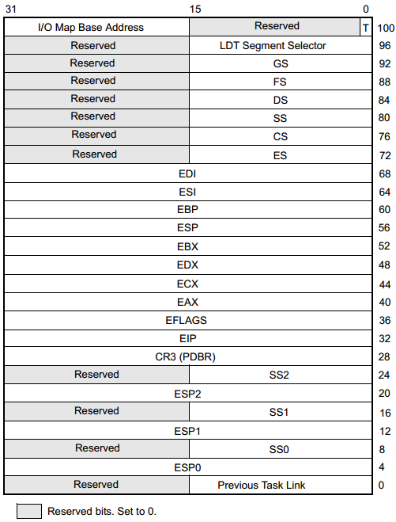
TSS 的结构可以大致分为以下几个部分
- 寄存器保存区域(偏移 32 ~ 95)：用于保存通用寄存器、段寄存器、PC 指针及标志寄存器。当 TSS 对应的任务正在执行时，该区域是未定义的；在当前任务被切换出时，各寄存器的值就会保存在对应位置；下次切换回原任务时，再从保存区域恢复寄存器的值
- 内层堆栈指针区域(偏移 4 ~ 27)：为了实现有效的保护，同一个任务在不同的特权级下会使用不同的堆栈，故一个任务拥有 4 个堆栈，也就需要 4 个堆栈指针，如 SS0 与 ESP0 就是特权级为 0 时的全指针。然而 TSS 中并没有指向特权级为 3 的堆栈指针，因为 3 级是最外层，任何向内层的转移都不会转移到 3 级
- 地址映射寄存器区域(偏移 28 处双字与偏移 96 处单字)：虚拟地址空间到线性地址空间的映射由 GDT 与 LDT 确定，与特定任务相关的部分由 LDT 确定，而 LDT 又由 LDTR 中的选择子确定；线性地址空间到物理地址空间的映射在分页机制下由 CR3 确定。当程序改变了 LDTR 或 CR3 时，必须将新值通过别名技术填入 TSS 对应字段中，否则 CPU 从来不向该字段自动写入。在任务切换时，CPU 自动从要执行的任务的 TSS 中取出这两个字段装入 LDTR 和 CR3，改变虚拟空间到物理空间的映射。
- 链接字段(偏移 0 处的双字)：如果当前任务由 CALL/中断/异常激活，那么该字段保存被挂起任务的 TSS 选择子，并且将 EFLAGS 中的 NT 位置 1，使该字段有效。返回时，由于 NT 为 1，RET 或 IRET 指令将使控制流回到上一个任务，从而实现任务的嵌套机制
- I/O许可位图基址(偏移 102 处的单字)：这个字段的数值是 I/O 允许位图相对于任务状态段起始位置的偏移地址，即多个任务状态段可以共用一个 I/O 许可位图。位图中一个 bit 表示一个 I/O 端口，为 0 表示端口可用，反之不可用
- T字段(偏移 100 处单字的最低位)：调试陷阱字段。在发生任务切换时，如果进入任务的 T 位为 1，则在新任务第一条指令执行前产生调试陷阱
那么 CPU 是怎么找到安装在 GDT 中的 TSS 的呢，之前提到了一个叫 Task Register 的寄存器，通过 TR 中 Cache 载入的 TSS 描述符就可以访问 TSS 了，流程如下：
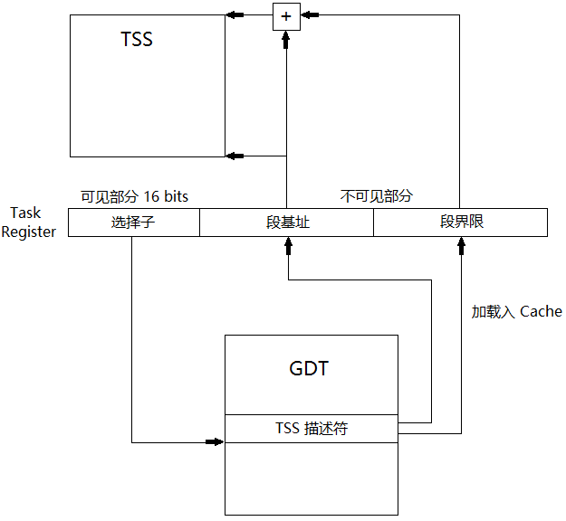
TSS 描述符的结构之前已经给出，当 S = 0，TYPE = 1/3/9/11 时，表示该描述符为 TSS 描述符
任务切换
TR 中存储着当前正在使用的 TSS 选择子，当使用 “call/jmp + 新 TSS 选择子” 指令时，CPU 至少做了三件事：
- 将当前所有寄存器(TSS结构中的那些寄存器)的值装入当前 TR 指向的 TSS 中
- 将新 TSS 选择子加载到 TR 中，同时将段描述符加载到 TR 不可见部分
- 将新 TSS 中的寄存器信息覆盖到各寄存器中
被加载到 TR 中的 TSS 描述符就从可用状态变成了正忙状态(Busy)，同时有可能设置链接字段、产生调试陷阱等
任务返回
- 将当前所有寄存器的值装入当前 TR 指向的 TSS 中
- 取链接字段的值装入 TR 中
- 恢复调用者保存的现场
实模式向保护模式转换
刚给机器加电或硬件复位 CR0 中 PE 位时，系统处于实模式
在将 PE 位置 1 时，还需对环境进行初始化，初始化的内容有：
- IDT：使其至少包含前 32 种中断类型的有效中断门
- GDT：使其索引为 0 的项为空描述符，且至少包含一个有效的代码段描述符，一个数据段描述符和一个堆栈段描述符
- PE：置为 1，表示进入保护模式
- JMP：执行一条段间 JMP 跳转指令清除内部指令队列，并且把 TSS 描述符的基址装入 TR
- 段寄存器：将初始选择子的值装入各段寄存器中
另一种适合多任务操作系统进入保护模式的方式是操作系统利用任务切换来进入保护模式，步骤如下：
- 初始化 IDT
- 初始化 GDT，使其最少有两个 TSS 描述符和初始任务所需要的原始代码段及数据段描述符
- 初始化 TR，使其指向一个 TSS
- 进入保护模式后，执行一条段间 JMP 跳转指令清除内部指令队列，并且把当前 TSS 选择子装入 TR
- 使用一条远转移指令装载 TR 寄存器，以便访问新的 TSS 并保存当前状态
虚拟 8086 模式
虚拟 8086 模式（以下简称 V86 模式）是保护模式下的一种工作方式，该模式使得多个 8086 应用软件同时运行，PC 机上运行的 DOS 程序就是运行在这种模式下的。通常利用时间片技术来实现多任务并发
V86 模式与保护模式的区别在于 CPU 对段寄存器的解释方式，V86 模式对段寄存器的使用方式与实模式相同，能够寻址 1M (20根地址总线)的存储器单元
当 EFLAGS 寄存器的 VM 为 1 时，表示 CPU 处于 V86 模式，然而 80386 没有提供直接改变 VM 的指令，且只有当前特权级 CPL 为 0 时，对 VM 的改变才有效
进入 V86 模式的方式有两种
- IRET 指令
- 任务切换
相应的，离开 V86 模式的方式也有两种
- 80386 中断门/陷阱门
- 任务切换
详细的工作细节参见 csdn 博文